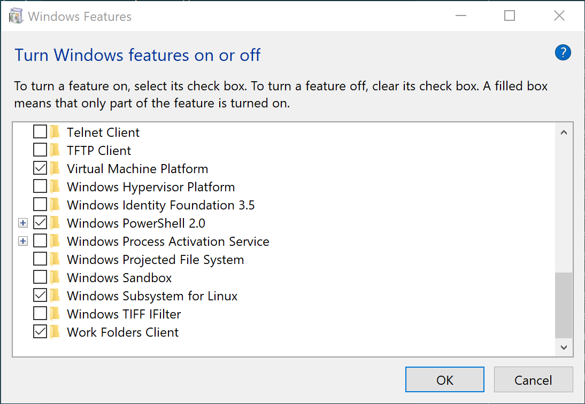
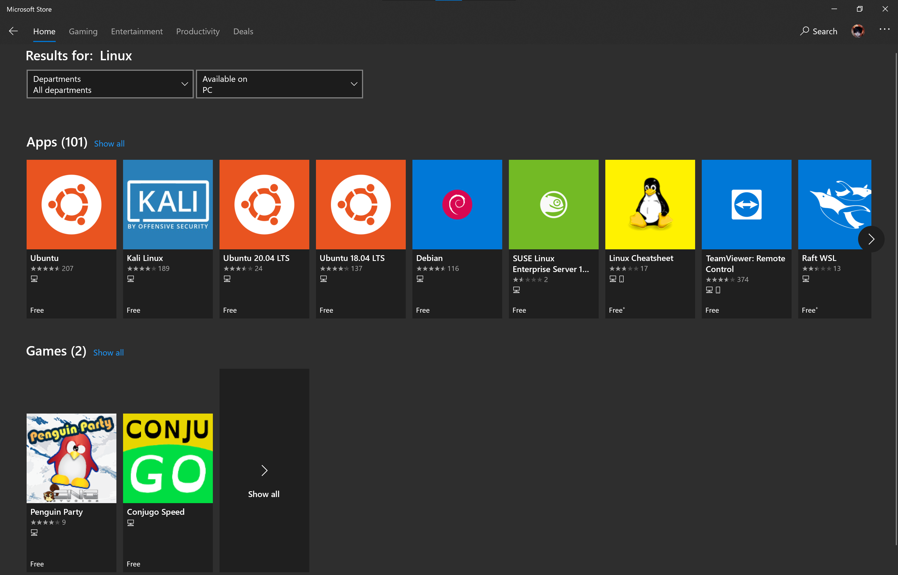

Running Linux on Windows via the Windows Subsystem for Linux
Attaining the full power of UNIX on the Windows platform
Published on July 14, 2019 (edited on July 4, 2020)
Thanks to the Windows Subsystem for Linux, it's never been easier to develop on the UNIX platform on Windows. Read the article to find out more!
Also, I was out at orientation last weekend, so I did kind of forget to post this last week, but oh well.
Introduction
I’ve been taking a great interest into the Linux operating system over the past couple of years, and my willingness to learn the multitude of commands on the Bash shell only spiked when I installed Ubuntu on my Windows 10 desktop (no virtual machine; full terminal!). There’s a vast array of options to emulate the Linux development experience on Windows. You may have heard of Cygwin and Windows Services for UNIX (now discontinued), but have you heard about the Windows Subsystem for Linux (WSL), Microsoft’s new official method for running Linux programs and terminal commands on Windows?
In addition, after starting my EECS 280 (Programming and Intro to Data Structures) course at Michigan, all students on Windows 10 were encouraged to use WSL for development and terminal. I do have to say that once you get acquainted with the Terminal, you'll never go back. Pushing your changes via the command line is quite an experience indeed!
What is the Windows Subsystem for Linux?
In 2016, Microsoft released the Windows Subsystem for Linux (WSL). WSL provides a Linux compatibility layer on Windows, allowing users and developers to execute Linux commands and executables natively on a Windows computer.
The project came about just as Microsoft cancelled Project Astoria, a bridge which allowed Android developers to port Android apps to run on Microsoft’s Windows Phone (rest in peace). Astoria faced multiple delays during development and was shelved in favor of Xamarin, another solution for cross-platform app development using the C# language. The technologies behind Project Astoria were reused to develop WSL as we know it today.
WSL 1.0 was released in August 2016 with support for only one distro, Ubuntu on 64-bit Windows 10. Eventually, more distros became available, such as SUSE, Debian, and others. While faster than previous attempts at Linux emulation on Windows, native I/O speeds were often slow thanks to the translation layer present in translating Linux commands to system calls on the Windows NT kernel.
Recently however, Microsoft released WSL 2.0 to the general public. This is a significant step as Microsoft removed the translation layer, instead opting to go with a full-blown Linux kernel inside Windows. Such a move would enhance compatibility with greater Linux calls and improve native I/O operation speeds, resulting in a productivity boon for casual Linux users and developers alike.
Now that you know the gist of WSL, here's how to run Linux programs on your Windows computer!
Installing the Windows Subsystem for Linux
First and foremost, if you haven’t updated your computer, do it now. In order to enable WSL 2.0, you will need Windows 10 version 2004 (build 19041). You should be able to download this update over Windows Update.
Now that your computer is all up-to-date, it’s time to get virtual Linux (except not really) running and ready to use on your PC.
NOTE: All steps below are for Windows 10 only. Windows Server 2016 and 2019 require additional configuration steps in order to use WSL on those platforms. Microsoft has official documentation available on their site.
Click on Start and type in “Control Panel.” Next, click on “Programs and Features” (if you’re in Category mode, click on “Programs” instead). Then, on the left-hand pane, click on “Turn Windows features on or off.” In the box that appears, scroll down and make sure that “Windows Subsystem for Linux” and "Virtual Machine Platform" is checked. You may need to restart your computer before continuing.
 Programs and Features" height="40%" width="40%" />{kind=link}
After the restart, open an administrator PowerShell window and type in the following:
wsl --set-default-version 2
This will set all future Linux distros to WSL 2 as the default version.
Picking your distro of choice
You’ve installed Windows Subsystem for Linux, but you can’t use it yet. There’s no distro to emulate the Linux terminal! To fix that, open up the Microsoft Store at the bottom. Next, type “Linux” in the Search box. All of the Linux distributions will be the first results.
{kind=link}
If you’re a beginner to Linux, I would personally install Ubuntu.
Click on your distro, then hit the Install/Get button on the page. Once it’s done installing, hit “Launch.”
At the moment, hitting the button will open a new Command Prompt window. You’ll have to wait a few minutes for the distro to configure itself. Once that’s done, you’ll be prompted to enter a UNIX account username and password. They do not have to be the same as your Windows credentials.

NOTE: If you choose to elevate a command with admin (SUDO) permissions, you'll need to enter your password, so make sure you can remember it!
Once you’ve set up your distro, make sure to update your Linux packages with the commands sudo apt update and sudo apt upgrade.
Now, you’ve got the full power of Linux in your hands. To see what distros you’ve installed, type in wsl -l.
Conclusion
After following this tutorial, you should have a fast and simple way to access a Linux terminal on your Windows PC. Install a Linux program on WSL and be amazed!
Over and out,
Nitish Vijai